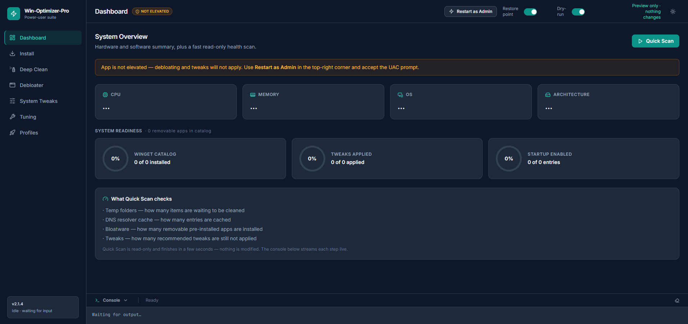
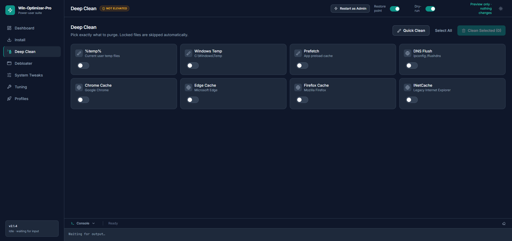
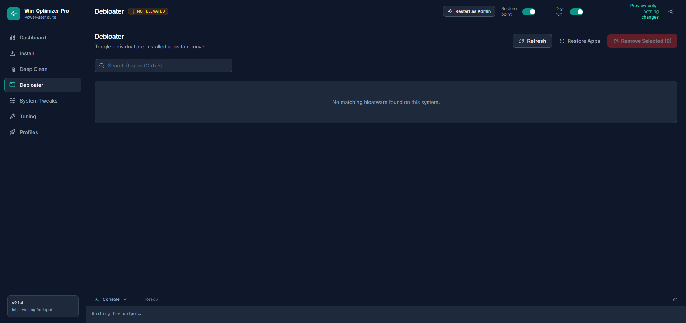
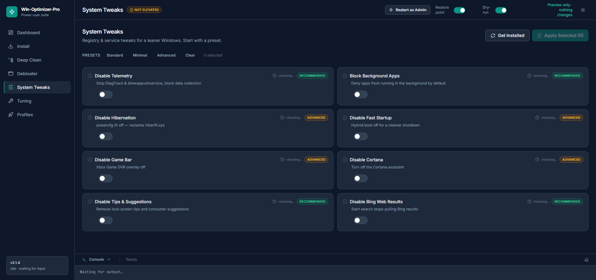
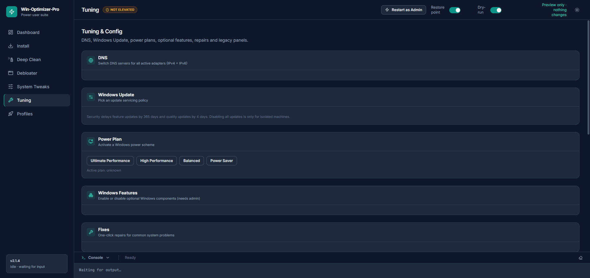

Clean. Debloat. Tune.
Your PC, freed.
One fast, private, open-source app that clears the junk, removes the bloat and unlocks real performance — so Windows feels like it should.

Every setting your PC needs.
One clean place.
Clear gigabytes in seconds.
A native robocopy sweep clears temp files, Windows Temp and Prefetch at incredible speed — tens of thousands of files in about thirteen seconds.

Uninstall the junk Windows ships with.
Remove pre-installed bloat in bulk, backed by an anti-brick preflight guard that checks the system before anything changes.

Instantly. No digging through Settings.
Context menus, startup items, privacy settings, DNS presets and power plans — applied with one click, no ten different control panels.

Performance that follows your workflow.
Fine-tune responsiveness and switch profiles to match how you work, with a live console showing every step in real time.

Thoughtful by design.
Fast enough to feel native. Careful enough to feel safe.
Deep Clean
Temp, Windows Temp & Prefetch cleared by a native sweep — fast enough that you won’t even finish your coffee.
Debloater
Remove pre-installed bloat and unused apps in bulk, with an anti-brick preflight guard first.
System Tweaks
Context menus, startup items, privacy, DNS presets and power plans — one click, instantly.
Safety first
Dry-run mode is on by default, with System Restore points created before anything is applied.
Reliable Stop
Work runs inside a Windows Job Object that kills the whole tree on close — Stop actually stops.
Light & dark mode
A clean interface that follows your theme, with a live console showing real-time progress.
Up and running in one line.
No account, no installers full of bloat. Download the installer or run the portable one-liner.
Portable — one line
Runs straight from GitHub, nothing installed to your system.
Full installer
Per-machine install with Start Menu & Desktop shortcuts, plus automatic updates.
Release installers are code-signed by the SignPath Foundation.